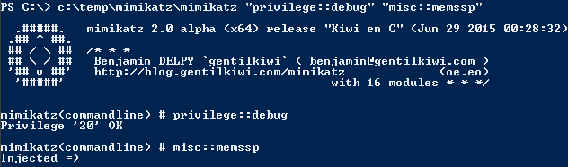

Use mimikatz to patch LSASS in memory with new SSP with no reboot required (rebooting clears the memssp Mimikatz injects).

Either of these scenarios enable adding a new SSP to a Windows system. The SSP included with mimikatz provides automatic logging of locally authenticated credentials. This includes the computer account password, running service credentials, and any accounts that logon.
This data is logged by default in the same location as the dll file to a log file, though it’s possible to log this data elsewhere on the system. The alternate log location could be in SYSVOL if the Windows system is a Domain Controller which provides access to Authenticated Users.
This is what a typical Group Policy template file might look like.

This is what a fake Group Policy template file might look like when as the Mimikatz SSP log file location